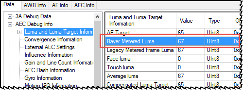
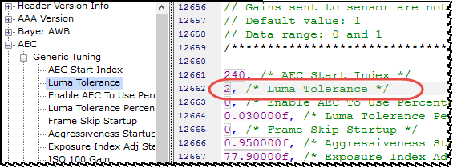
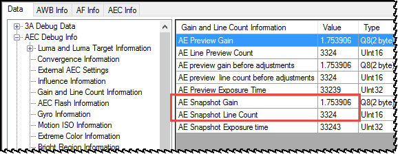

Multiple options exist for improving brightness consistency. First adjust luma tolerance, then try to adjust exposure, gain, and exposure time. If brightness consistency does not improve, check for system latency.
Option 1: Adjust luma tolerance
- Capture multiple test images with 3A EXIF information and AEC log messages. Open the images in the Image Viewer.
- In the 3A Debug dialog box, click the Data tab and select .
-
Compare the Bayer Metered Luma (frame luma) among the test
images.

- If there is no significant difference in frame luma, adjust exposure index, gain, and line count.
- If there is a significant difference in frame luma between test images taken
under the same test conditions:
- Tune AE luma target and tolerance.
- After luma tuning, on the ISP Tuning tab, click
Edit Chromatix Data. Select Header
type: 3A and navigate to AEC >
Generic Tuning > Luma
Tolerance.
 - Reduce the luma tolerance value. Be aware of the possible trade offs: Too small of a luma tolerance may cause more oscillation. A higher luma tolerance value may make the variation in image brightness more obvious.
- Capture multiple images with the revised test conditions to determine if the brightness consistency has improved without side effects.
Option 2: Adjust exposure index, gain, and line count
- Capture multiple test images with 3A EXIF information and AEC log messages. Open the images in the Image Viewer.
- Compare the images to determine whether Exposure index, Gain, and Line count (Exposure time) are the same between the test images.
-
In the 3A Debug dialog box, click the
Data tab and select .

-
In the 3A Debug dialog box, click the
Data tab and select to view the Exposure index.

- If the Exposure index, Gain, and Line Count (exposure time) for all the images are the same, the brightness inconsistency might be an ISP issue with lens rolloff or gamma. Tune the ISP lens rolloff or ISP gamma. Try to disable or just use a single table for Gamma and Rolloff functions.
- If the Exposure index is different and Luma Target is the same for the test images, the issue may be due to luma tolerance.
- If the Exposure index is different and Luma Target is also different, add logs to help diagnose the problem.
Option 3: Check for latency issues
- Capture multiple test images with 3A EXIF information and AEC log messages.
- Work with the sensor driver engineer and sensor vendor to verify that the sensor gain and exposure are synchronized with every frame.
- Capture consecutive images with the new test conditions to verify that the brightness issue is resolved.